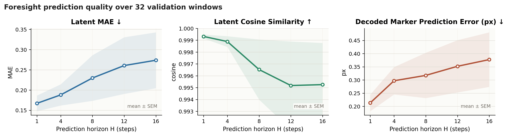

Results
Main Comparison
We compare Ours against DP, DP+tactile, π0.5, RDP, and ForeAR across five contact-rich tasks.
| Method | Board | Vase | Card | Chip | Socket | |||||
|---|---|---|---|---|---|---|---|---|---|---|
| Success ↑ | Safe Success ↑ | Success ↑ | Safe Success ↑ | Success ↑ | Safe Success ↑ | Success ↑ | Safe Success ↑ | Success ↑ | Safe Success ↑ | |
| DP | TBD | TBD | TBD | TBD | TBD | TBD | TBD | TBD | TBD | TBD |
| DP+tactile | TBD | TBD | TBD | TBD | TBD | TBD | TBD | TBD | TBD | TBD |
| π0.5 | TBD | TBD | TBD | TBD | TBD | TBD | TBD | TBD | TBD | TBD |
| RDP | TBD | TBD | TBD | TBD | TBD | TBD | TBD | TBD | TBD | TBD |
| ForeAR | TBD | TBD | TBD | TBD | TBD | TBD | TBD | TBD | TBD | TBD |
| Ours | TBD | TBD | TBD | TBD | TBD | TBD | TBD | TBD | TBD | TBD |
Table 1. Success rate and safe success rate comparison. Safe success counts trials that complete the task while avoiding unsafe contact, emergency stops, or damaging interactions.
Ablation Study
| Variant | Success Rate ↑ | Safe Success Rate ↑ | Contact Failure ↓ |
|---|---|---|---|
| w/o Predictioncurrent-contact guidance with the same scorer and refinement procedure | TBD | TBD | TBD |
| w/o Scoreremove learned contact-quality scoring | TBD | TBD | TBD |
| w/o Guidanceremove gradient-based action refinement | TBD | TBD | TBD |
| Prediction + Score + Rerankingselect among sampled actions without gradient guidance | TBD | TBD | TBD |
| Prediction as Policy Inputconcatenate predicted tactile features to the policy input | TBD | TBD | TBD |
| Joint Prediction-Policy Trainingjointly optimize the prediction module and policy | TBD | TBD | TBD |
| Only [Component TBD]single-component control to be specified | TBD | TBD | TBD |
| ForeTac (Full)prediction + score + trust-region guidance | TBD | TBD | TBD |
Table 2. Ablation study showing the contribution of each component.
Latent Reconstruction Quality
TacVAE compresses tactile marker displacement histories into compact latent maps, then decodes them back to marker displacement fields before downstream foresight prediction.
| Encoder | Board | Vase | Card | Chip | Socket | |||||
|---|---|---|---|---|---|---|---|---|---|---|
| Norm. MAE ↓ | Cos ↑ | Norm. MAE ↓ | Cos ↑ | Norm. MAE ↓ | Cos ↑ | Norm. MAE ↓ | Cos ↑ | Norm. MAE ↓ | Cos ↑ | |
| PCA | TBD | TBD | TBD | TBD | TBD | TBD | TBD | TBD | TBD | TBD |
| PointNet-AE | TBD | TBD | TBD | TBD | TBD | TBD | TBD | TBD | TBD | TBD |
| Conv-AE / ConvVAE | TBD | TBD | TBD | TBD | TBD | TBD | TBD | TBD | TBD | TBD |
| TacVAE (Ours) | 0.039 | 0.998 | 0.110 | 0.986 | 0.039 | 0.998 | TBD | TBD | 0.038 | 0.998 |
Table 3. Latent reconstruction quality across the five task datasets. Norm. MAE measures normalized marker-field reconstruction error, while cosine similarity measures directional consistency of the reconstructed tactile deformation. Chip-grasping reconstruction evaluation is pending.
Foresight Prediction Quality
The foresight model predicts future TacVAE latents, and the predicted latents are decoded back to marker displacement fields for evaluation.

Figure 4. Tactile foresight prediction accuracy across horizons H=1, 4, 8, 12, 16, measured by latent MAE, latent cosine similarity, and decoded marker prediction error.
Guidance Diagnostics
We analyze the blackboard policy to evaluate whether score-gradient guidance improves the learned contact-quality score during late denoising, while keeping updates bounded and localized in action space. The diagnostic uses denoising logs and 128 validation windows.

Figure 5. Guidance diagnostics for blackboard wiping. A: score improvement after guidance. B: raw gradient norm, scaled gradient norm, and applied update norm. C: action-dimension guidance heatmap averaged over 128 validation windows, showing localized correction on a small subset of action dimensions. D: cosine alignment between the policy denoising direction and the guidance direction.
Takeaway. The diagnostic analysis supports that guidance improves the learned contact-quality score mainly through small, bounded, and action-local corrections, rather than by globally reshaping or reranking full trajectories.